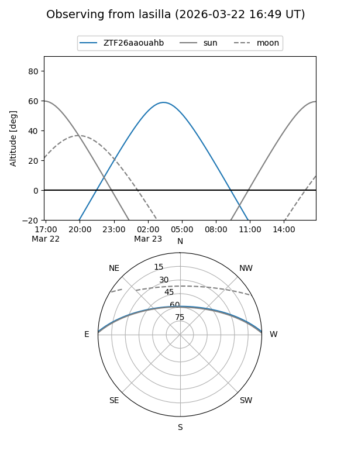
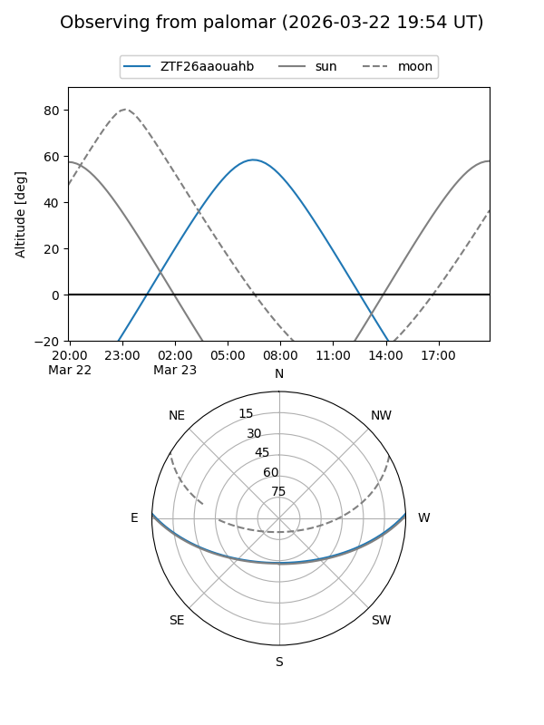

ZTF26aaouahb
Target ZTF26aaouahb at 2026-03-23 07:38
Aliases and brokers:
FINK: link
Lasair: link
ALeRCE: link
alt names
ZTF26aaouahb (ztf,fink_ztf)
Coordinates:
equatorial (ra, dec) = 160.3975,+1.92417
equatorial (HMS+DMS) = 10:41:35.39,+01:55:27.00
galactic (l, b) = (246.4003,+49.97931)
Flags:
Photometry:
last ztfg=16.77
1 ztfg detections
Lightcurve
Visibility


Additional plots